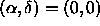
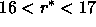

The SDSS Image Products interface accepts a list of objects specified in one of the following formats: run/rerun/camcol/fieldID/objectID (see § 4.4.1), long object ID (from the skyServer or Catalog Archive Server), ra/dec, NED, or SIMBAD target names. Files generated by the sdssQT may be uploaded directly. All imaging products (atlas images, corrected frames, reconstructed frames, binned images, fields summaries, and mask files) are available. All of the files for a request are bundled together in a .tar, .tar.gz, or .zip file.
An object list from the MAST skyServer Interface can be sent to the data product interfaces via a ``shopping cart.'' To demonstrate this access, we begin in the MAST SDSS skyServer Interface. Select galaxies within 10 arcmin of  and  by entering the coordinates in the RA,DEC boxes, 10.0 in the Radius(arcmin) box, highlighting GALAXY from the Object Type list, and by entering 16..17 in the Magnitude box for r. Three objects are returned. Choosing the ``Browse Results as HTML'' button brings up a list of these objects. Select the three objects by using the button in the Mark column, select Add marked records to shopping cart, and then select Retrieve data products for shopping cart. The data products may then be downloaded.